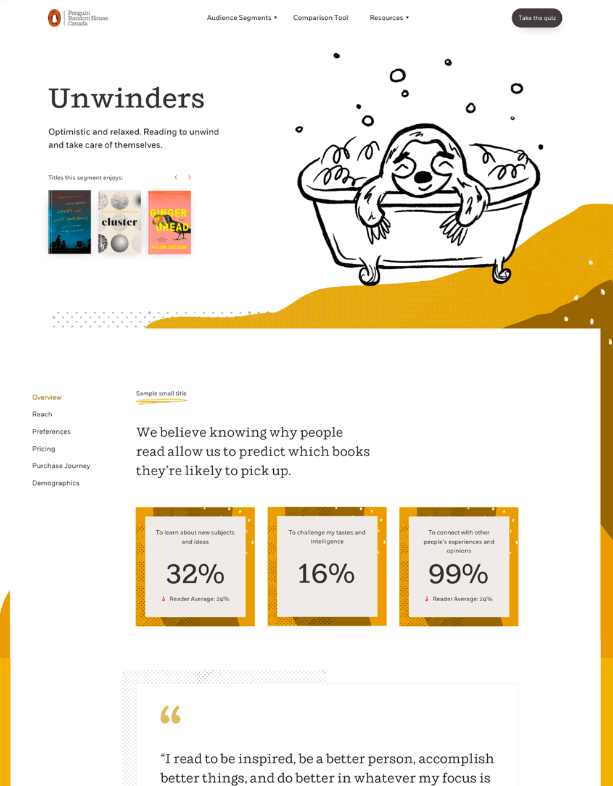
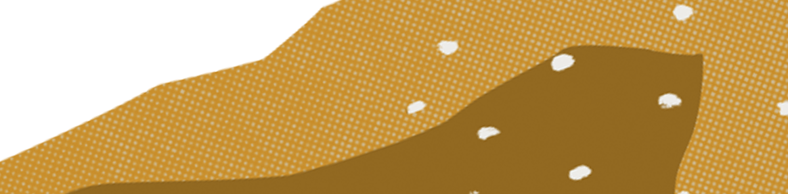

Penguin Random House is a leading book publisher. We helped them build their research portal meant to help staff make well informed marketing, sales and publishing decisions.
We started this project with a colour palette, 2 font families and a maxed out excel spreadsheet, and transformed these artifacts into a narrative driven web experience.
Given the offline, traditional print nature of Penguin Randomhouse, I felt it was important to create a visual style that felt modern, yet traditional. We ultimately landed on the second art direction below for its ability to juxtapose whimsical brush illustrations with sophisticated textures. We felt this would bring research to life while allowing it to feel reputable.

Readers were divided into 6 different personas altogether, each with key differentiating features and interests. We chose to depict these personas through a series of anthropomorphic animals that we felt symbolized each reader group. their whimsical nature is meant to bring the research to life by creating a central character into the story of each persona while allowing users to make quick associations.
Results
Penguin Random House Canada now uses this internal tool to help their authors and clients make more informed decisions.